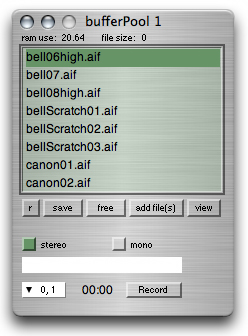
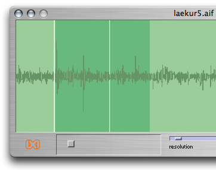

ixiQuarks : BufferPool

| Buffer Pool |
The Buffer Pool stores sound files (buffers) in RAM (the memory of the computer). The the buffers can be read into the pool from any location and be saved as one pool. The "view" button allows you to view the buffer and play it. The "save" button makes it possible to save the buffer pool (the filenames, not the sounds) so it can be easily loaded up again later. The "r" button makes visible the recording functionality of the buffer pool. Here you can record sound straight into the pool to be used seconds later. The recording functionality is the same as the "Recorder" tool. By hitting "view" or ENTER on a selected soundfile, you can view the waveform of the buffer (the file) and choose start and end point of the buffer. That way, other instruments will know which part of the buffer you have selected and want to use. On the top of the window, you can see the memory of the pool itself ("RAM use") and the memory taken up by each sound file. |